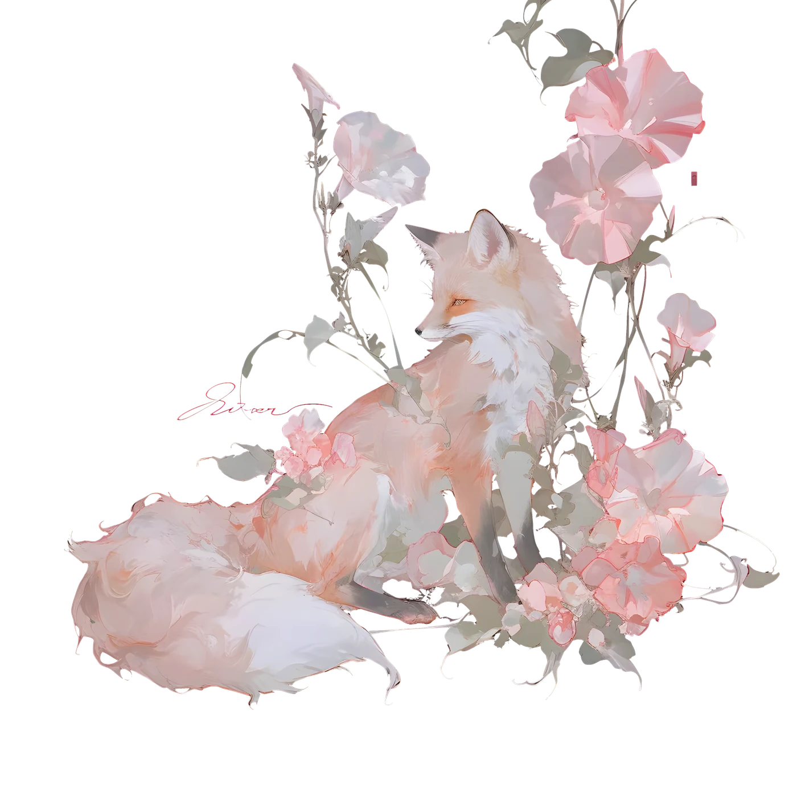

麦田
。
—
—
°
—
°
/
—
°
…
26.5823° N
101.7184° E
30.2741° N
120.1551° E
✦
✧

TOGETHER SINCE
✦
—
days
Every day with you.
自 2024.12.30 · 领证
—
天
❀
TODAY'S NOTE
…
— 麦穗 留
收 藏 室
KEEPSAKES
—
条消息 · 全部会话
◀
星图
还没有记忆
跟麦穗多聊几句关于你日常的事，他会悄悄记下。
攒到 10 条以上就会出现在这里。
✕
会话
＋ 新会话
◀
☰
麦穗
在线
默认
Opus
Sonnet
Haiku
工 具
TOOLS
打电话
听得见的麦穗
议事厅
泽 + 麦穗 + GPT
✦
敬请期待
下一个想法放这
设 置
SETTINGS
调用通道
读取中…
订阅
走 Claude 订阅额度，不额外花钱
订阅优先，自动切换
订阅额度用完自动换外部 API 重试，聊天不断
外部 API
直接按量计费，把订阅额度留给别处
外部 API 配置
读取中…
API key
只存在服务器上，保存后不回显；重新填一遍就是覆盖
中转地址
一般填到根地址、不带 /v1 结尾；不通再按中转文档原样填
这个中转只认 Bearer 验证
key 确定没错还报 401 时勾上再试
对话用的模型
拉取列表
不指定（原样传，中转认官方名就行）
列表从中转站/官方现拉；中转的模型名常跟官方不一样，选一个当外部通道的默认
后台小活用的模型
不指定（用官方 Haiku 名）
问候语 / 记忆提取 / 翻译这些便宜活，挑个中转里最便宜的小模型
保存
麦穗
正在接通…
按住说话
首页
记忆库
工具
设置